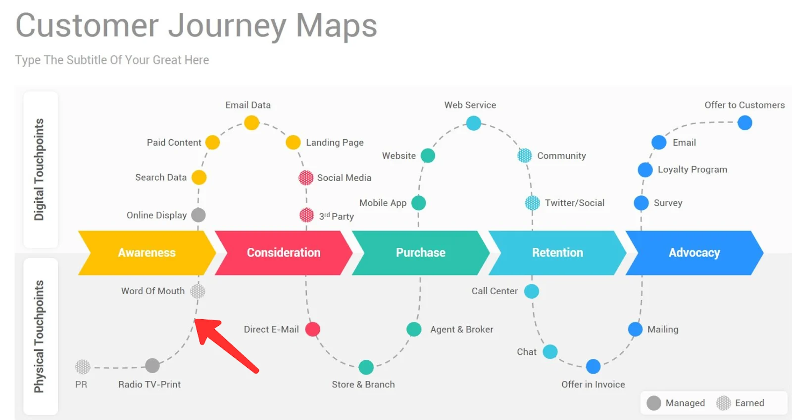

what is user journey degsin ?
A user journey is a path a user may take to reach their goal when using a particular website.
User journeys are used in designing websites to identify the different ways
to enable the user to achieve their goalas quickly and easily as possible
what is the 5 steps of user journey ?
Stage 1: Empathize—Research Your Users' Needs.
Stage 2: Define—State Your Users' Needs and Problems.
Stage 3: Ideate—Challenge Assumptions and Create Ideas.
Stage 4: Prototype—Start to Create Solutions.
Stage 5: Test—Try Your Solutions Out.
